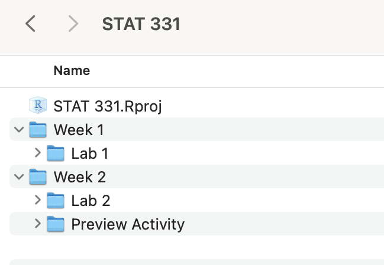
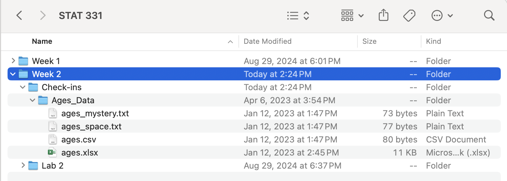

# this will work if the file is in the same directory as the code
# (i.e., the Quarto document and the data are in the same folder)
surveys <- read_csv(file = "surveys.csv")
# this will work if a sub-folder called "data" is in the same directory as the code
# (i.e., you first have to enter the data sub folder and then you can access the surveys.csv data set)
surveys <- read_csv(file = "data/surveys.csv")Importing Data
0.1 Learning Objectives
- Read in data from common formats into R
- Recognize ways to skip lines when reading in data
- Recognize ways to declare variable types when reading in data
📽 Watch Videos: 8 minutes
📖 Readings: 15-20 minutes
💻 Activities: 30 minutes
✅ Check-ins: 1
1 Loading Data Into R
1.1 Where does my data live?
Recall our discussion about Directories, Paths, and Projects. Often you will specify a relative file path to your data set rather than an absolute file path. This works if the file is in the same directory as the code or within a sub-folder of the same directory as the code.
Relative file paths
My opinion
I often organize my workflow with sub-folders so that I would have a sub-folder called data to reference from my base directory location.
You can either choose to create an overall data sub-folder right within your STAT 331 folder (e.g., STAT 331 > data) and store all of your data for your class there… or you may choose to store the data associated with each individual assignment within that folder (e.g., STAT 331 > labs > lab2 > data).
But wait! I thought we created our R Projects (STAT 331.Rproj) to indicate our “home base” directory? When working with a Quarto document, this changes your base directory (for any code running within the .qmd file) to the same folder the .qmd file lives in.
Open your class directory STAT 331.Rproj and type getwd() into the Console. This should lead you to the folder directory your R Project was created in.
Now open your lab1.qmd assignment and type getwd() into a code chunk. This should lead you to the folder directory your lab1.qmd file is saved in.
Ugh, that’s confusing.
1.2 Using the here Package
A great solution to consistency in file paths is the here package:
install.packages("here")This package sets the “home base” for every working directory to be the folder that your R Project (STAT 331.Rproj) lives in (e.g., your STAT 331 folder). This makes your directory paths consistent regardless of what folder you are working in.
# shows you the file path the function here() will start at.
here::dr_here()
Accessing Files with the here package
If my STAT 331 file structure looks like this:

then the here() function will set my STAT 331 folder as the “home base” for my working directory. Suppose I’m working on lab2.qmd, which is stored in the Lab 2 subfolder of Week 2. For my assignment I need to read in the surveys.csv data file, which is also stored in the Lab 2 folder.
This is how my path would look:
surveys <- read_csv(here::here("Week 2", "Lab 2", "surveys.csv"))Note the folder and file names are in quotations because they are names of files and not objects in R.
Accessing Functions without Loading a Package
Using :: before the function (e.g., here::here) is a way of telling R which package the function lives in without having to load that entire package (e.g., library(here)).
The choice of loading an entire packageversus accessing a function from a package comes down to efficiency. If you are only using one function from a package, then it seems inefficient to load the entire package which would take up much more memory. This is the case for the here package, where we will be using one function (the here() function) from this package.
1.3 How do I load my data?
1.4 ✅ Check-in 2.3: Loading Data
For this check-in you are asked to work through reading in different data sets. You are expected to create your own Quarto document to complete this activity.
The folder Age_Data contains several data sets with the names and ages of five individuals. The data sets are stored as different file types. Download Ages_Data.zip here, make sure to unzip the folder, save these in a reasonable place (e.g., STAT331 > Week 2 > Checkins or STAT331 > Checkins > Week 2).
Extracting zip folders
You will need to extract the contents of the ages.zip file, that means you will need to uncompress the files from the folder for RStudio to know where to get the data from.
Once you have the data saved (and extracted) in your STAT 331 folder, preferably in the Week 2 subfolder, use the readr and readxl packages to complete the following exercises.
- Load the appropriate packages for reading in data.
- Read in the data set ages.csv
- Read in the data set ages_tab.txt
- Read in the data set ages_mystery.txt
- Read in the data set ages.xlsx
- Find a way to use
read_csv()to read ages.csv with the variable “Name” as a factor data type and “Age” as a character data type.
Once you’ve finished coding these exercises, head over to Canvas and fill in the “gap” code I’ve provided.
Tip
For reference, I would recommend you store the Ages_Data similar to how I have:
